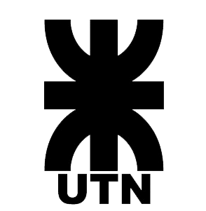

Primario
Completado en la "Escuela Primaria Pedro Ignacio de Castro Barros"
Secundario
Completado en el "Colegio Pre Universitario General San Martín", en su modalidad de Gestión y administración de empresas

Terciario
Carrera: Licenciatura en Producción de Bioimágenes, en la "Universidad Nacional de La Rioja".Primer año cursado
Carrera: Tecnicatura en Programación, en la
"Universidad Tecnológica Nacional", cursando actualmente el segundo año 